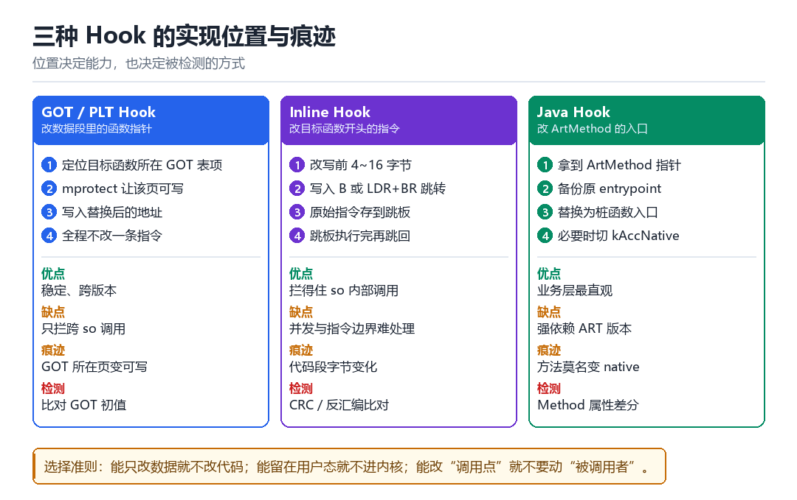

Android hook 原理
frida hook、GOT hook、CFI 与 CRC
三种 Hook，三种痕迹。选哪一种，取决于你要骗过谁。
9.1 三种实现位置

| 类型 | 改什么 | 拦得住什么 | 典型痕迹 |
|---|---|---|---|
| GOT / PLT | 数据段的函数指针 | 跨 so 的调用 | GOT 所在页变可写 |
| Inline | 函数开头的指令 | 包括 so 内部调用 | 代码段字节变化 |
| Java | ArtMethod 的 entrypoint | Java 方法调用 | 方法变成 native |
9.2 GOT Hook：最省事也最脆弱
ELF 的延迟绑定机制让外部函数调用先经过 GOT 表。把表项改成自己的函数地址，就完成了一次 hook——一条指令都不改，代码段 CRC 完全不受影响。缺点也很明确：它只对“跨 so 的调用”有效，如果目标 so 内部直接调用自己的函数，GOT 里根本没有这一项。
// 1. 找到目标 so 的基址与 GOT 段
auto base = get_module_base("libtarget.so");
auto got = find_section(base, ".got");
// 2. 改页权限，让 GOT 可写
mprotect(page_align(got), page_size, PROT_READ | PROT_WRITE);
// 3. 替换表项（保存原值以便调用原函数）
orig = *(void**)slot; *(void**)slot = (void*)my_hook;9.3 Inline Hook：能力最强，最难写对
Inline hook 直接改函数开头的几个字节，写入一条跳转。难点全在细节：要处理指令边界（不能把一条指令劈成两半）、要保证多核并发安全（改的瞬间别的核可能正在执行）、要处理 PC 相对寻址（被搬走的指令可能依赖原地址）、还要在 ARM64 上考虑 BTI 与 PAC。
- 指令边界：ARM64 是定长 4 字节，比 x86 友好，但仍要确认被覆盖的指令不是跳转目标。
- 并发：先用原子写改到“半跳转”状态是危险的，通行做法是暂停其他核或使用 breakpoint 中转。
- 近跳转范围：
B指令只有 ±128MB，超出范围要用LDR + BR组合。 - 指令缓存：改完必须
__builtin___clear_cache，否则 CPU 可能还在执行旧指令。
9.4 CFI 与 CRC：检测方的两道闸
CFI（Control Flow Integrity）要求间接调用的目标必须是“合法入口”。在 ARM64 上体现为 BTI：间接跳转目标的第一条指令必须是 BTI 或 PACIASP，否则触发异常。所以你的 hook 桩函数也必须带这个标记，否则一调就崩。
CRC 则是更朴素的思路：定期算关键函数的字节哈希，和预期值比对。Inline hook 会直接改变字节，所以是 CRC 的天敌；GOT hook 不改代码段，但会把 GOT 所在页变成可写，于是“页权限变化”又成了新的信号。
每堵上一扇门，就会打开一扇窗——检测与对抗的历史，就是这句话的注脚。
9.5 本章自测
- 为什么 GOT hook 拦不住 so 内部的直接调用？
- Inline hook 需要处理的四个细节分别是什么？
- BTI 是什么？为什么 hook 桩函数不加 BTI 会崩溃？
- 如果检测方同时查 CRC 和页权限，你会怎么绕？
9.6 深入：ARM64 上一条跳转要占多少字节
这是 inline hook 最实际的问题。你只有有限的字节可改，还要保证原子性与并发安全。
| 方案 | 字节数 | 跳转范围 | 备注 |
|---|---|---|---|
| B imm26 | 4 | ±128MB | 最省，但范围小 |
| LDR + BR | 16 | 全地址空间 | 要占 4 条指令 |
| ADRP + ADD + BR | 12 | ±4GB | 折中 |
| BRK 中转 | 4 | 任意 | 靠信号处理跳转，慢但安全 |
现实中常用组合：函数开头写 B 到附近的 trampoline（如果靠得够近），trampoline 里再放 LDR + BR 到真正的 hook。
9.7 并发安全的三种做法
- 停核：改之前把其他 CPU 停住（
stop_machine在用户态不可用，但可以靠信号让线程进入安全点）。 - 原子写：把 4 字节对齐的
B指令用一次原子写替换。前提是“旧指令与新指令都是单条 4 字节”。 - 中转页：先让入口指向一个“中转页”，等所有线程都过了这个点，再改真正的内容。
9.8 一个检测与反检测的对照表
| 检测手段 | 能发现 | 绕过思路 |
|---|---|---|
| 代码段 CRC | inline hook | 改数据段（GOT）、或用硬件断点 |
| 页权限检查 | GOT 被改成可写 | 改完立刻恢复权限 |
| 反汇编比对 | 指令被替换 | 让替换后的指令语义等价（难） |
| 执行耗时 | 蹦床开销 | 减少 hook 数量、优化跳板 |
9.9 原理推演：为什么“改代码”比“改数据”更容易被发现
因为“代码”有更多的不变量可以被校验：字节内容（CRC）、指令语义（反汇编）、页权限（是否可写）、以及执行行为（分支预测、耗时）。而“数据”的不变量少得多。
| 对象 | 可校验的不变量 | 数量 |
|---|---|---|
| 代码段 | CRC、反汇编、页权限、语义 | 多 |
| 数据段 | 初值、结构自洽性 | 少 |
所以工程上的优先级永远是：改数据 > 改代码 > 改内核结构。每上升一级，需要维护的不变量数量就翻倍。
9.10 数据细节：BTI 的三条指令
BTI // 允许任意间接跳转目标
BTI c // 只允许 call 类型
BTI j // 只允许 jump 类型
// 另外 PACIASP 也隐含 BTI 语义实践含义：如果你的蹦床入口用 BTI（无参数）就最安全——它接受所有类型的间接跳转。但如果加固方把调用点限定为 BTI c，而你的蹦床是 BTI j，就会触发异常。
9.11 工程权衡：hook 数量与稳定性
| hook 数量 | 稳定性 | 性能 | 可维护性 |
|---|---|---|---|
| 1~3 个 | 高 | 好 | 好 |
| 10+ 个 | 中 | 中 | 中 |
| 50+ 个 | 低 | 差 | 差 |